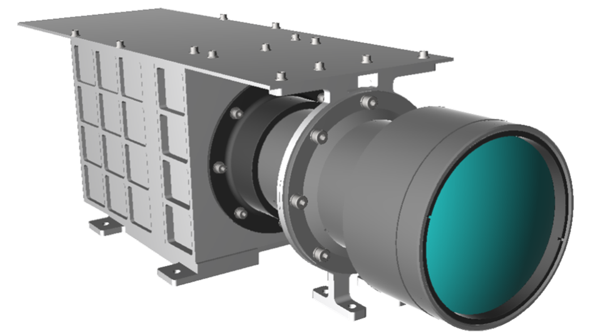
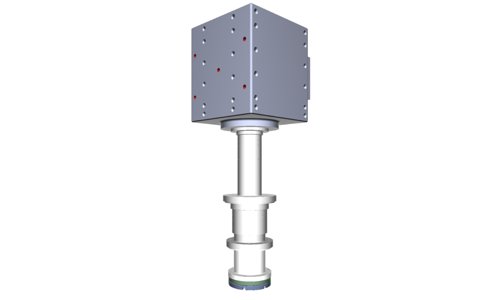

GrainCams
달 표면 토양입자 카메라(GrainCams, 그레인캠스)는 달 표면 부근의
먼지 입자를 관측하는 두 대의 카메라 SurfCam(서프캠)과
LevCam(레브캠)으로 구성되며, 로버에 탑재됩니다. 로버가
착륙선으로부터 멀리 이동하면서 SurfCam은 달 토양 미세 구조의 3차원
영상을 촬영합니다. 달 표면의 중력 및 전자기 환경에서는 토양 입자가
표면 상층부에 쌓일 때 지구와는 다른 독특한 구조를 이룰 것으로
예측됩니다. LevCam은 여러 지역에서 표면 가까이에 떠다니는 먼지
입자를 관측하고, 태양 고도 및 전기장, 자기장 변화에 따른 입자의
움직임을 관찰합니다.
GrainCams가 탐사하고자 하는 것은 지구상의 실험실에서는 달과 중력
환경이 달라 재현할 수 없고, 달에서의 형태 그대로 가져올 수도 없는
달 고유 환경입니다. 이런 관측은 우리나라가 세계 최초로 시도하는
것입니다.


SurfCam 형상 모델 (천문연 제공)
LevCam 형상 모델 (천문연 제공)